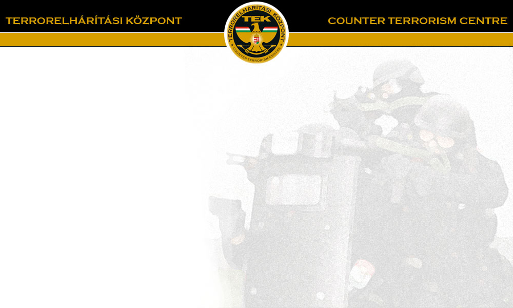

Szervezet
|
Humánigazgatás
|
Gazdálkodás
|
Aktuális
Szakmai folyóirat
|
E-Ügyintézés
|
Bejelentések
|
Kapcsolat
Aktuális
Végső búcsú
Végső búcsú
Videó
Képek
Kis-Dunában elmerült bv-sek utáni kutatás
Közlemény
Videó
Képek
Jósvafő
Közlemény1
,
Közlemény2
,
Közlemény3
Jósvafő vágott videó
,
Jósvafő fotók
TEK elfogás Kecskemét 20210601
Bányából történő mentési gyakorlatot tartott a TEK
Magyarország belügyminiszterének díszparancsa
Mindennapi biztonság - Kézikönyv
Mindennapi biztonság - Kézikönyv.epub
Mindennapi biztonság - Kézikönyv.pdf
Hableány hajóroncs mentési munkálatai (Hableány rescue work)
Kiemelés videó 2019.06.11. (Lifting procedure video 11.06.2019)
Sajtótájékoztató hanganyag 2019.06.12. (Press conference audio 12.06.2019.)
Vessel formation (video) 09.06.2019.
Sajtóközlemény 2019.06.09.
Press release 09.06.2019.
Légtérzár grafikája_1 (Picture of airspace closure Nr.1)
Légtérzár grafikája_2 (Picture of airspace closure Nr.2)
Press conference script 08.06.2019.
Press conference video 08.06.2019.
Emelő heveder 2019.06.07. (Strap 07.06.2019.)
Clark Ádám hajóbeállási terv 2019.06.07. (Positioning plan 07.06.2019.)
Press conference script 06.06.2019.
Press conference video 06.06.2019.
Sajtóközlemény 2019.06.05.
Press release 05.06.2019.
Sajtóközlemény 2019.06.04.
Press release 04.06.2019.
Sajtótájékoztató leirat 2019.06.03.
Press conference script 03.06.2019.
Press conference video 03.06.2019.
Sajtóközlemény 2019.06.03.
Press release 03.06.2019.
Felvételek (Recording)
Felderítő merülés (Exploratory dive - video recording 04.06.2019.)
Tesztmerülés 2 - videó (2nd test dive - video recording)
Tesztmerülés 1 - videó (1th test dive - video recording)
Látási viszonyok a vízben - videó (Visibility in the water - video recording)
Szonár képek (Sonar pictures)
Drónfelvétel – Katasztrófavédelem (Video recording with drone - National Directorate General for Disaster Management)
Vízi felvétel ORFK (Video recording from boat - Hungarian National Police Headquarters)
Kísérés
Kísérés 2019.03.24.
Kísérés 2019.03.22.
Dokumentumok:
Értesítési adatkérő űrlap

© 2010-2017 TEK.
{kind=link}
{kind=link}
{kind=link}